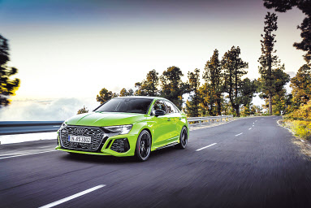

아우디, 407마력 ‘더 뉴 아우디 RS 3’ 출시

아우디코리아가 초고성능 콤팩트 세단 ‘더 뉴 아우디 RS 3(사진)’를 27일부터 판매한다고 밝혔다.
아우디 RS 모델은 ‘Renn Sport( Racing Sport)’의 약자로 기술적 한계에 대한 아우디의 도전을 상징한다.
아우디의 고성능 차량 생산 및 기술 개발을 담당하는 자회사 아우디 스포트 GmbH가 생산하는 고성능 라인업이다.
이번에 선보이는 더 뉴 아우디 RS 3는 국내 시장에 처음 선보이는 모델이다.
2.5ℓ 5기통 가솔린 직분사 터보차저(TFSI) 엔진과 7단 S트로닉 자동변속기를 탑재해 최고출력 407마력,
최대토크 50.99㎏.m의 강력한 힘을 발휘한다.
정지상태에서 시속 100㎞까지 가속하는데 소요되는 시간은 3.8초다.
최고 속도는 시속 280㎞, 연비는 복합 연비 기준 9.2㎞/ℓ다.
아우디 고유의 사륜구동 시스템인 콰트로와 RS 스포츠 서스펜션을 적용해 민첩하고 스포티한 주행 성능과 동시에 승차감을 높였다.
RS 스포츠 배기 시스템, 아우디 드라이브 셀렉트(3가지 RS 모드), 프로그레시브 스티어링 등이 탑재됐다.
더 뉴 아우디 RS 3는 ‘A3’ 세단의 콤팩트한 비율과 스포티함을 RS 시그니쳐 디자인과 균형 있게 조합했다.
가격은 부가세 포함 7695만9000원이다.